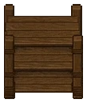

Box Rack
A special storage that holds 6 items only available in the Talking Skull Cellar. In addition to the one included in the cellar, there is available space for 3 additional Box Racks, for a total of 4 racks.
Its main purpose is to store drinks to sell in the Talking Skull. Any alcoholic drinks stored here will be sold automatically through the tavern above. Proceeds for the drinks will be located in the chest sitting on the bar next to Barman. You can also store other items on the shelf, like in the trunk. Both the kitchen and the oven can draw items from the box racks. Any food or drink stored in the box racks will not be sold during Tavern Events.
| Box Rack | |
|---|---|
 | |
Basic information
| |
Related pages :
|
Storage |
Building Information
| |
Horizontal x Vertical :
|
5x3 |
Rotatable :
|
False |

Cost
| Icon | Materials Required | Energy | Notes |
|---|---|---|---|

|
4× Wooden beam |
- |